Перейти на главную страницу справочника.
Пересчет обмотки электродвигателя при отсутствии провода нужного диаметра.
- Нет смысла хранить в мастерской по ремонту электродвигателей обмоточный провод всех существующих диаметров. Какой провод должен быть всегда под рукой зависит от мощности электродвигателей чаще всего поступающих в ремонт. В этой статье расскажу как пересчитать обмотку при отсутствии провода нужного диаметра.
Допустим, требуется перемотать электродвигатель 5,5 кВт. 1000 оборотов в минуту. Обмоточные данные электродвигателя: напряжение 380 вольт, соединение обмотки в звезду, витков в пазу 20, намотан в два провода диаметр каждого d=1,04 с шагом обмотки по пазам у=11;9;7, количество параллельных ветвей а=1, количество пазов Z1=54.
Первый способ пересчета.
- В первом способе сама обмотка не пересчитывается, а подбирается общее сечение имеющихся в наличии параллельных проводов вместо отсутствующего провода нужного диаметра. При этом не важно во сколько параллельных проводов намотана заводская обмотка, в один, два или более провода, задача обмотчика подобрать общее сечение новых проводов равным общему сечению проводов заводской обмотки. Таблица сечений круглого провода. Заводская обмотка выполнена в два провода диаметром d=1,04, сечение провода 1,04 равно S=0,849, складываем сечения обоих проводников 0,849+0,849=1,698. В таблице сечений круглого провода находим провод с сечением S=1,698, это провод диаметром 1,47 мм., но обмоточные провода с таким диаметром не выпускаются, а рядом в таблице есть провод с диаметром 1,45 мм. Допустимое уменьшение сечения провода 3%, проверяем 1,698-3%=1,647 сечение провода 1,45 равно S=1,651 поэтому мы можем вместо двух проводов 1,04 использовать один с диаметром 1,45. Представим себе что у нас нет провода 1,45, тогда подберем нужное сечение в два или более проводов. К имеющемуся проводу с диаметром 1,12 S=0,916 найдем второй провод, 1,698-0,916=0,782, по таблице сечений круглого провода можно воспользоваться проводом с диаметром 1,00. Можно рассчитать и в три провода, общее сечение делим на три 1,698/3=0,566 получился провод 0,85. При данном расчете витки, напряжение, шаг, количество параллельных ветвей не изменяются, изменяется только диаметр провода, но общее сечение проводников остается неизменным. Расчет можно использовать для трехфазных и однофазных электродвигателей.
{kind=link}
Второй способ пересчета.
- Вторым способом изменяют количество параллельных ветвей обмотки, соответственно изменяются диаметр провода, витки и схема соединений катушек в обмотке. Сначала надо определить на сколько параллельных ветвей возможно пересчитать данный для примера двигатель. Воспользуемся схемой укладки рис. №1. По рисунку видно, что в каждой фазе по три катушки, соответственно возможное количество параллельных ветвей а=1 или а=3. При увеличении количества параллельных ветвей, число проводников в пазу увеличивается, а сечение провода уменьшается в число раз параллельных ветвей. При уменьшении количества параллельных ветвей, число проводников в пазу уменьшается, а сечение провода увеличивается в число раз параллельных ветвей. Прежде чем переходить к составлению схемы, рассчитаем новые диаметр провода и количество витков в пазу. При переходе с одной параллельной ветви на три сечение провода уменьшаем в три раза 1,698/3=0,566 получился провод 0,85, а количество витков в пазу увеличиваем в три раза 20×3=60. У нас получилась обмотка с новыми данными: витков в пазу 60, диаметр провода 0,85. Теперь нужно изменить схему соединений катушек в обмотке с одной параллельной ветви на три параллельные ветви.
Рис. 1
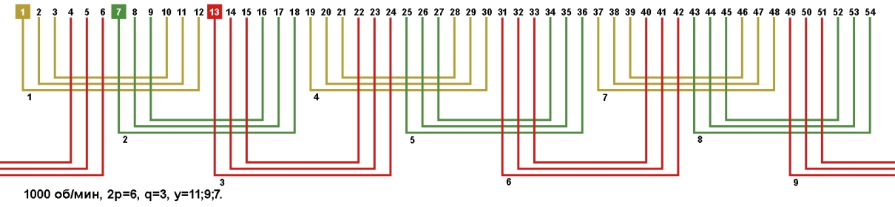
- На рисунке №2 показана схема соединений катушек в одну параллельную ветвь для данного двигателя. Так как соединения катушек в фазах одинаковые рассмотрим на примере фазы А желтого цвета. По рисунку видно, что все катушки первой фазы соединены последовательно конец первой соединяется с началом четвертой, а конец четвертой соединяется с началом седьмой. Вспомните правила составления схемы соединений катушек в обмотке электродвигателя. Направление тока показано стрелками от вывода С1 к выводу С4.
Рис. 2
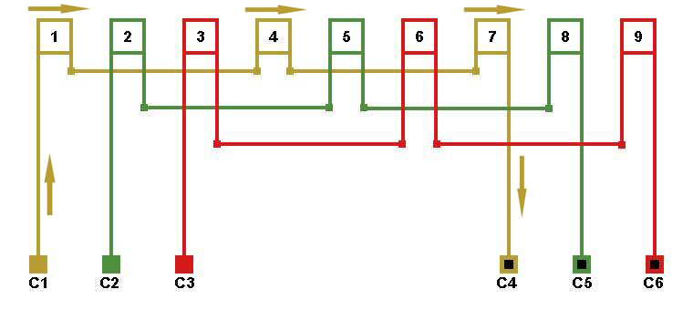
- При составлении схемы соединения в три параллельные ветви направление тока не должно измениться рис. №3. Направление тока осталось от вывода С1 к выводу С4.
Рис. 3
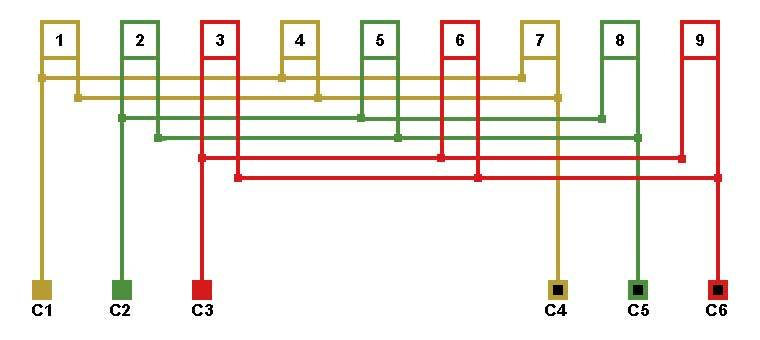
- Также можно расширить возможности для расчета, если перейти от однослойной обмотки на двухслойную рис. №4. Возможное количество параллельных ветвей: а=1, a=2, a=3, a=6, соответственно увеличивается возможность подбора нужного провода.
Рис. 4
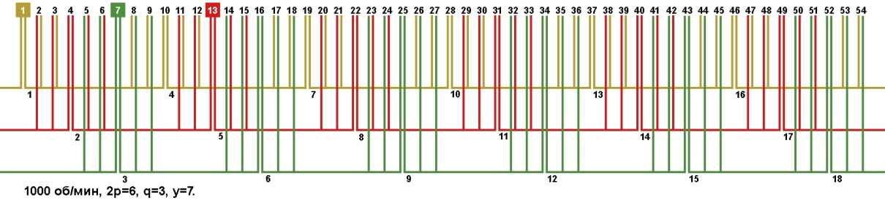
- Расчет можно использовать для трехфазных и однофазных электродвигателей.
Третий способ пересчета.
- Третий способ расчета можно использовать только для трёхфазных электродвигателей и обмотчик должен знать какое напряжение будет подаваться на вывода электродвигателя. Обмоточные данные нашего электродвигателя: напряжение 380 вольт, соединение обмотки в звезду. Мы можем пересчитать обмотку на соединение фаз в треугольник, оставив при этом напряжение питания электродвигателя 380 вольт. При пересчете обмотки со звезды на треугольник сечение провода уменьшают в 1,73 раза, а количество витков увеличивают в 1,73 раза. При пересчете обмотки с треугольника на звезду сечение провода увеличивают в 1,73 раза, а количество витков уменьшают в 1,73 раза. Так как мы пересчитываем двигатель со звезды на треугольник, то сечение провода уменьшаем в 1,73 раза S=1,698/1,73=0,981 в таблице сечений круглого провода находим провод с сечением S=0,981, подходит провод диаметром 1,12 мм. Количество витков требуется увеличить в 1,73 раза, 20×1,73=35 витков в пазу. После расчета получилась обмотка с новыми данными: витков в пазу 35, диаметр провода 1,12, соединение фаз в треугольник.
{kind=link}
{kind=link}
Четвертый способ пересчета.
- Четвертый способ расчета, это объединение всех выше перечисленных способов. Вы можете пересчитать данный для примера электродвигатель в три параллельные ветви, соединение фаз в треугольник, еще и в два или более провода. При пересчете обмотки двигателя в несколько параллельных проводников или в несколько параллельных ветвей, выбирайте более тонкую пазовую изоляцию.
Параллельные ветви при дробным "q".
- При пересчете в несколько параллельных ветвей электродвигателя с дробным "q", возможное количество параллельных ветвей равно количеству периодов в фазе. Для примера возьмем схему укладки обмотки электродвигателя с количеством пазов 33, 2p=4 1500 об. мин. рис. №5.
Рис. 5
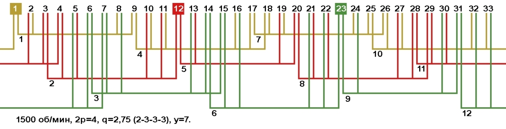
- Порядок чередования катушечных групп в периоде для данного двигателя 2-3-3-3, одна катушка двухсекционная и три катушки трехсекционные. Общее количество катушек в периоде 4. По рисунку видно, что в каждой фазе по четыре катушки, поэтому максимальное количество параллельных ветвей для данного электродвигателя а=1.
Параллельные секции в катушках.
Прежде чем применять данный вид обмотки, читаем на стр. 310 "Обмотки электрических машин" Жерве Г.К 1989 г.
- Если при всех выше перечисленных расчетах не удалось выйти на требуемый провод, расчет можно продолжить путем деления катушек обмотки на параллельные секции. Для примера возьмем обмотку двигателя 24 паза 3000 об/мин.
Рис. 6
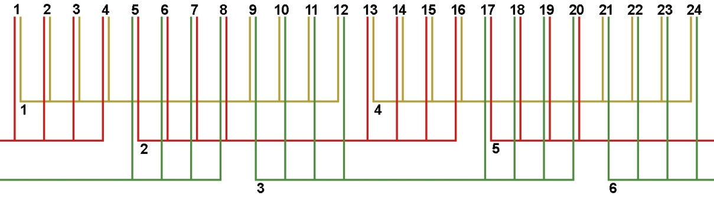
- По рисунку №6 видно, что в катушке 4 секции, возможное количество параллельных секций а=1с, а=2с и а=4с.
Рис. 7. Схема укладки при параллельных секциях в катушке.
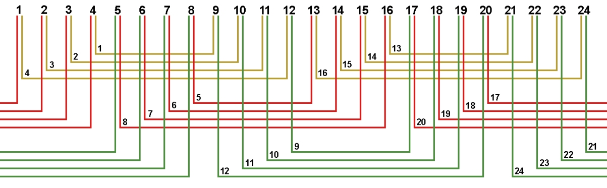
- Так как секции в катушкак соединяются конец с началом, то и параллельные секции будем соединять с учётом этого.
Рис. 8. Схема соединений обмотки, количество параллельных ветвей/секций а=2/2с.
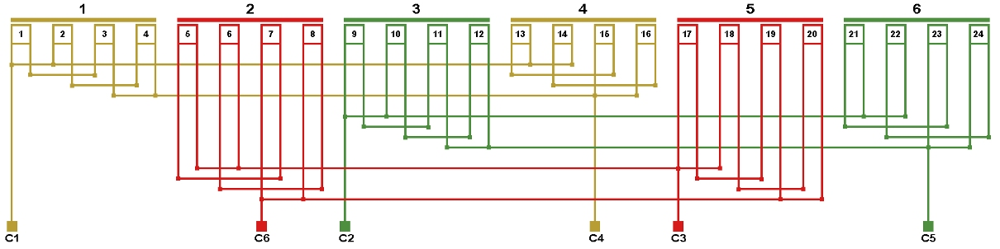
Рис. 10. Схема соединений обмотки, количество параллельных ветвей/секций а=2/4с.
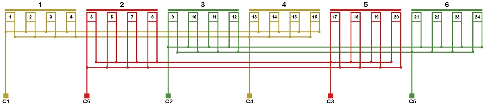
- При увеличении количества параллельных секций в катушке, число проводников в секции увеличивается, а сечение провода уменьшается в число раз параллельных секций.
Параллельные обмотки в электродвигателе.
- Расчет можно продолжить, разделив обмотку электродвигателя на две с мощностью каждой в два раза меньше заводской и соединить их параллельно. Для примера возьмем двигатель 36 пазов 1500 об/мин.
Рис. 11. Схема укладки. 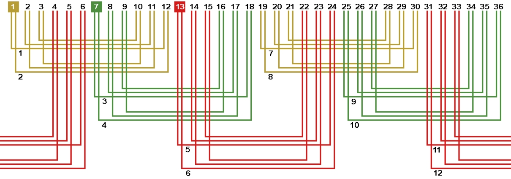
{kind=link}
Рис. 12. Схема соединений. Число параллельных ветвей а=4. 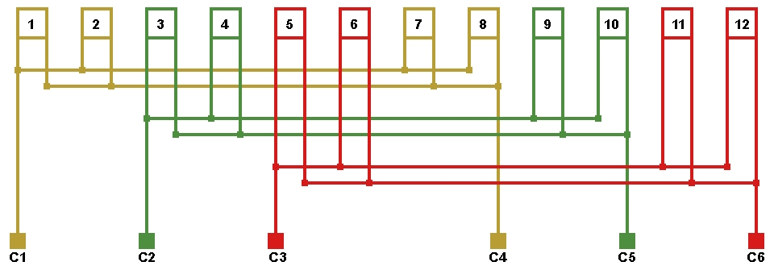
{kind=link}
Литература по данной теме:
Жерве Г.К "Обмотки электрических машин" 1989 г.
08.02.2012 г.